•Неоднократный призёр муниципального этапа Всероссийской Олимпиады Школьников по экологии и биологии. •Участник городской научно-практической конференции "Старт в медицину" в МГМУ имени И.М. Сеченова. •Обладатель сертификата об экологическом образовании по курсу практического полевого изучения природы Подмосковья и методов научных исследований на полевом экологическом практикуме.
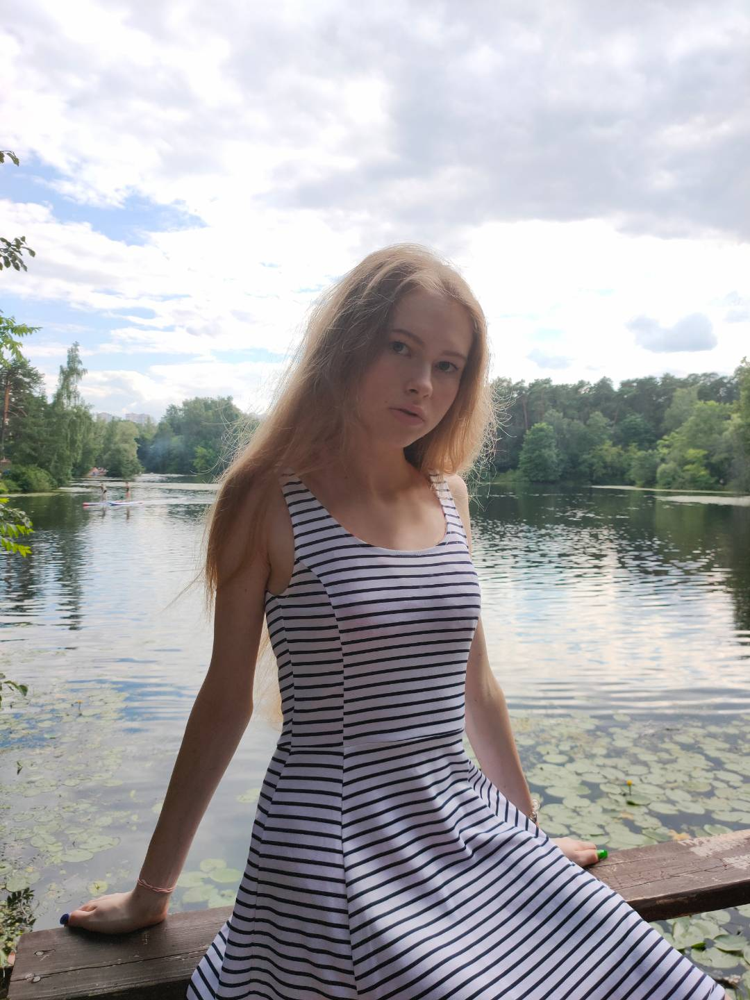 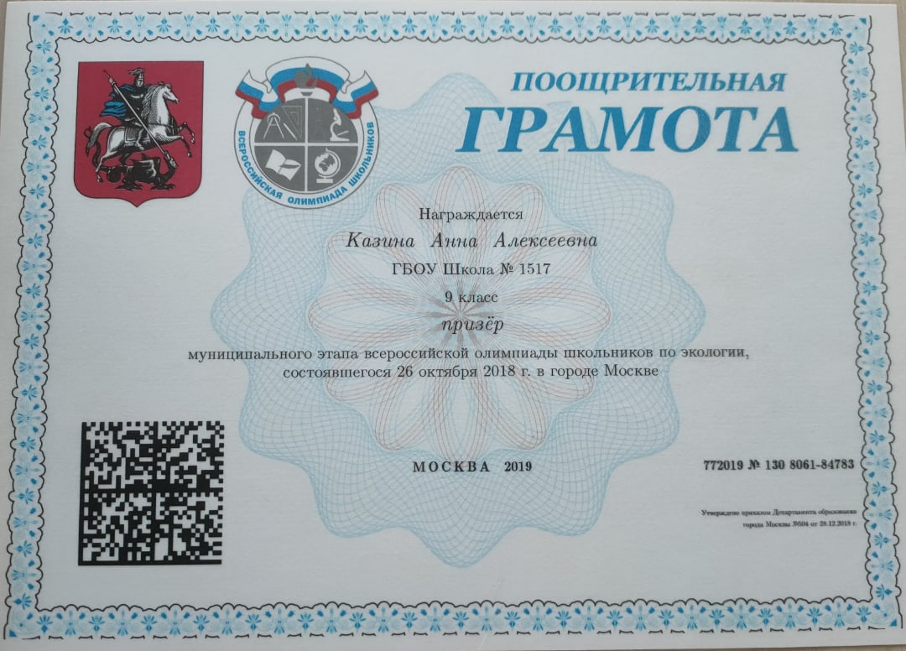• III место в третьем Московском городском конкурсе "Девушки в IT" фестиваля "Технологический старт" • Обладатель сертификата "The best project manager in the "Girls in IT" Московского института менеджмента • III место в школьных соревнованиях по информатике "Международный день безопасного"
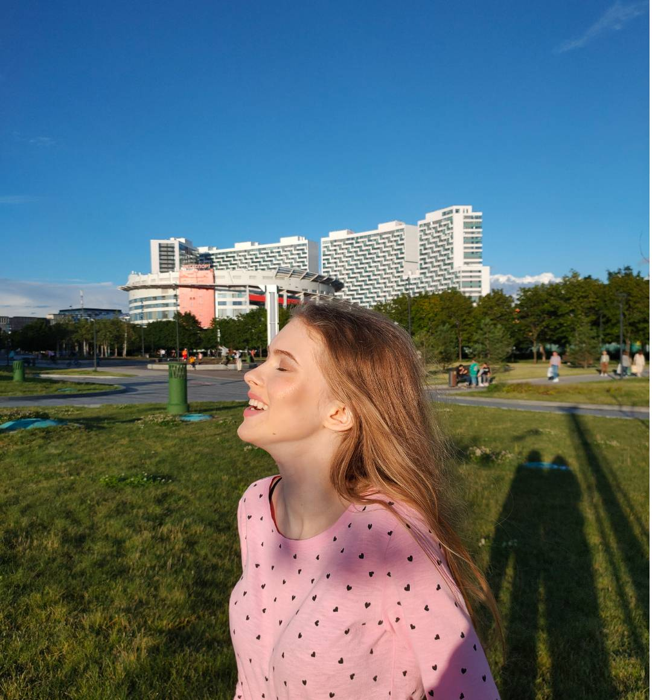 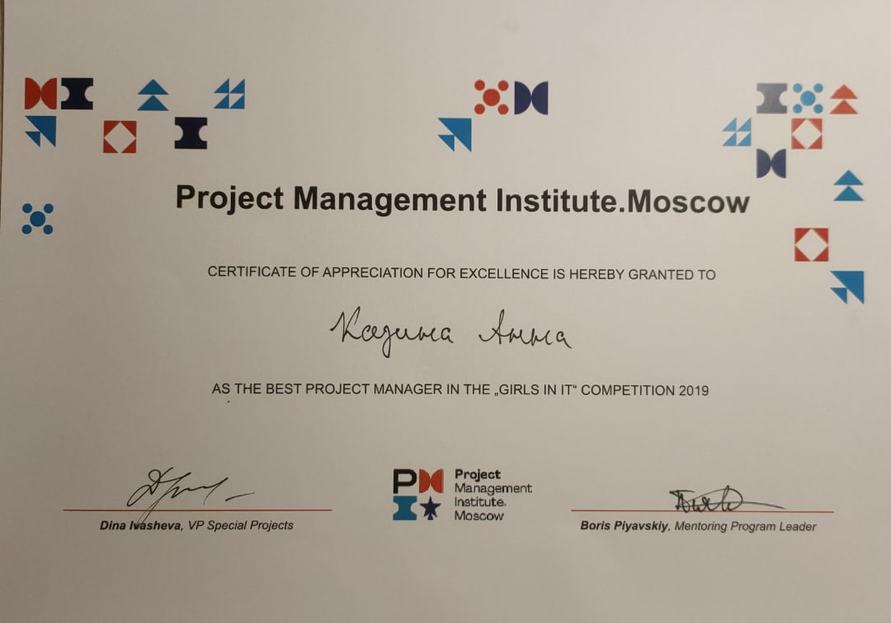•Финалист окружного этапа IV Всероссийского конкурса юных чтецов "Живая классика" •Призёр III степени олимпиады "МИСиС зажигает звёзды" по русскому языку •I и III места за лучший текст в школьном конкурсе "Медиалига-1517"
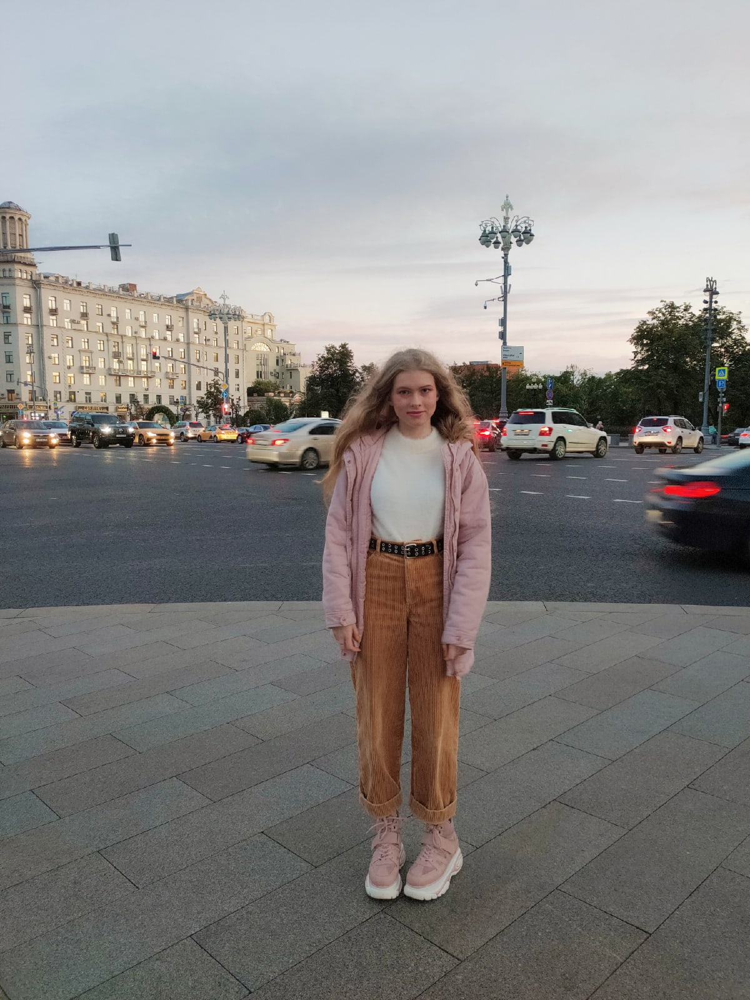 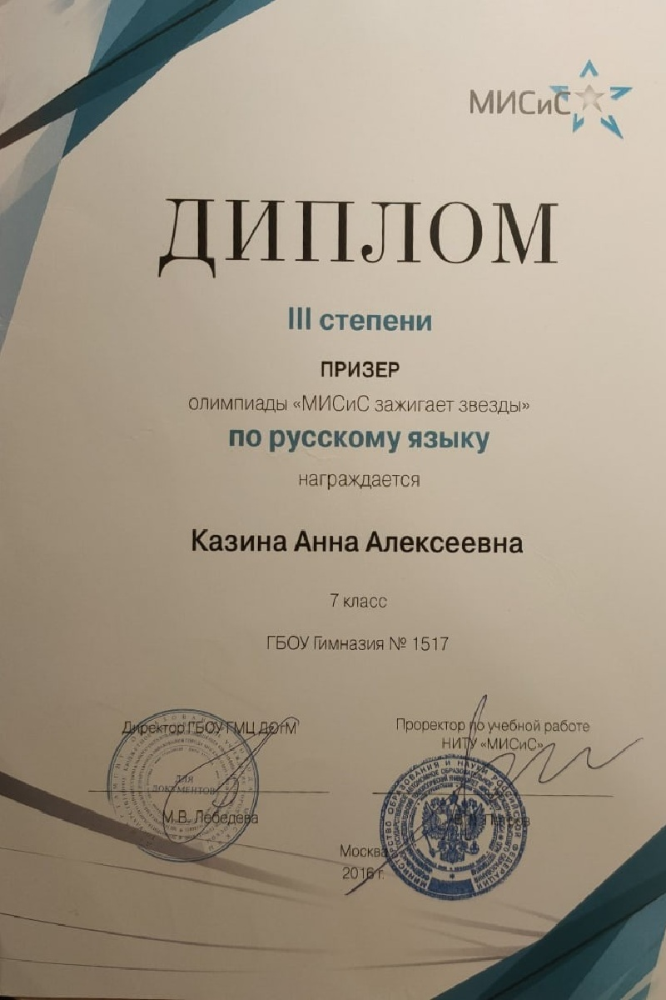• I место в международной конференции "Объединяемся знаниями" проект "Пушкинская сказка — прямая наследница народной" • II место в международной конференции "Объединяемся знаниями" проект "Шумовое загрязнение окружающей среды" • III место в международной конференции "Объединяемся знаниями" проект "Времена года в праздниках народного календаря" • I место в межрайонном этапе Московского городского конкурса исследовательских и проектных работ
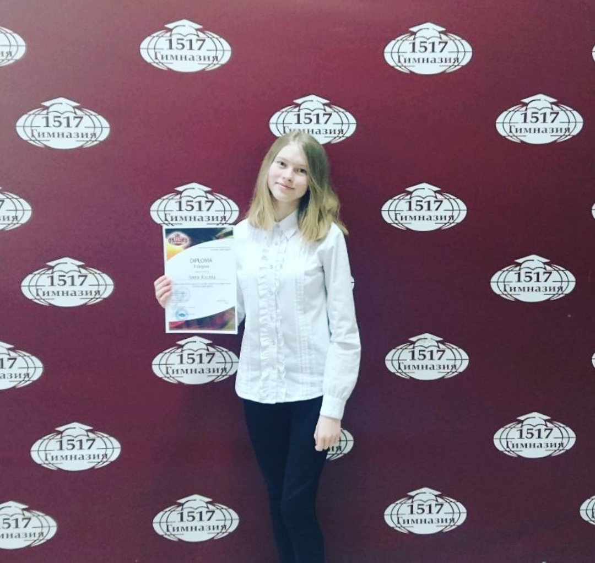 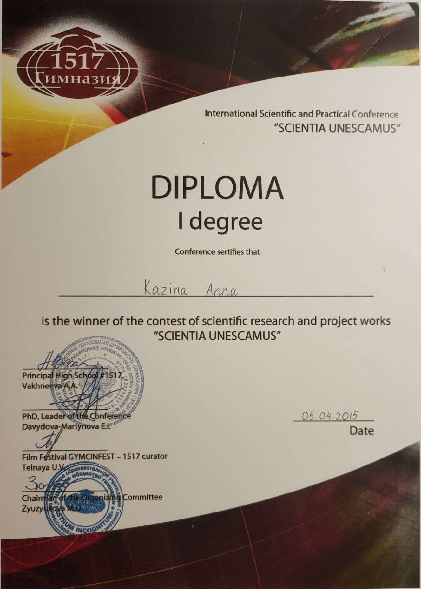•Окончила музыкальную школу имени В.В. Андреева по специальности фортепиано. •Лауреат II степени Всероссийского конкурса вокально-хорового творчества "Весенние проталины" г. Казань •Капитан команды-победителя олимпиады "Музеи, Парки, Усадьбы" •Обладатель диплома за лучшую актерскую работу X фестиваля театра МГАДМТ им. Н.И. Сац "Москва-Театр-Школа" •Участник VI Театрального фестиваля детских и юношеских спектаклей на иностранных языках "Smilles-2019"
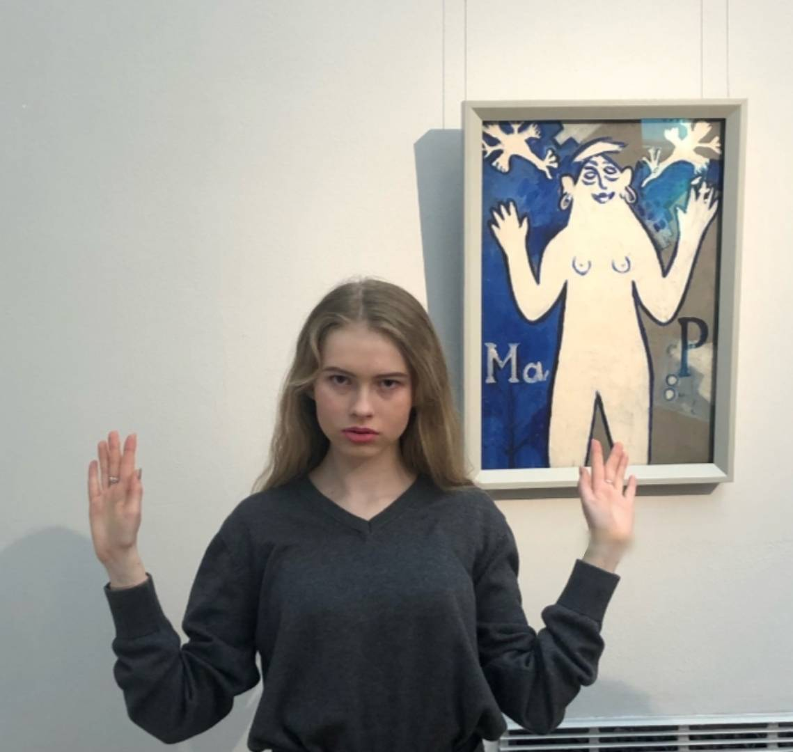 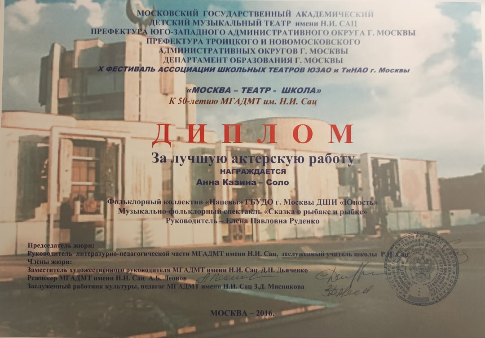•Активно веду социальные сети: VK, Instagram и TikTok. •Записываю песни, играю на фортепиано. •Посещаю художественные галереи, театры, концертные залы. •Люблю общаться с людьми и гулять в центре Москвы.
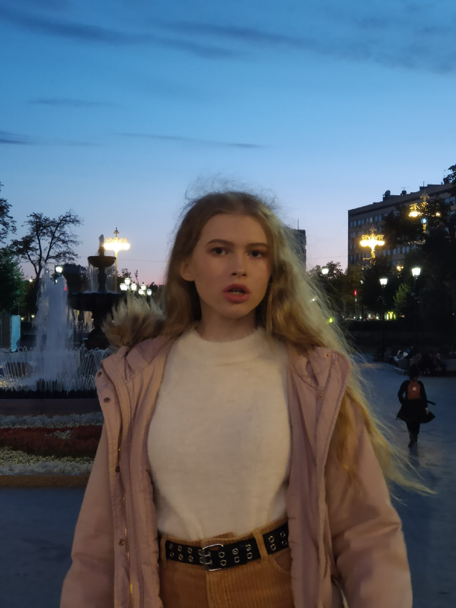